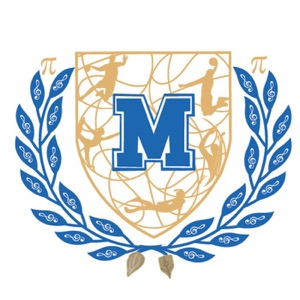

Lycée MarceauChartres · depuis 1887 Portes ouvertesSections européennes, sportives, BIA aéronautique, langues anciennes : un parcours sur mesure.
Les sections européennes proposent un enseignement renforcé dans une langue étrangère et l'enseignement d'une discipline non linguistique en langue cible.
De la Seconde à la Terminale, deux disciplines non linguistiques sont enseignées en anglais : physique-chimie et histoire-géographie.
Conditions d'accès →Section européenne en langue allemande, avec enseignement renforcé et possibilité d'obtenir la mention « section européenne » au Baccalauréat.
Conditions d'accès →Pour les élèves qui souhaitent conjuguer études et pratique sportive intensive, encadrés par des entraîneurs qualifiés.
Pôle Espoir Handball : structure d'excellence pour les jeunes joueurs, en partenariat avec la Fédération Française de Handball.
Le Pôle Espoir →Section d'excellence sportive : entraînement hebdomadaire intégré à l'emploi du temps, compétitions UNSS et fédérales.
Section basket →Plongée et activités subaquatiques : formation théorique et pratique, sorties en milieu naturel, brevets fédéraux.
Plongée →Natation et natation artistique : entraînement régulier, préparation aux compétitions UNSS et fédérales.
Sports d'eau →Pour les élèves passionnés de sport sans intégrer une section sportive : 3 h hebdomadaires, évaluation au Bac.
Option EPS →Vue d'ensemble du domaine sportif : sections, pôles, options, association sportive UNSS.
Domaine sportif →Le lycée propose un éventail d'enseignements artistiques en option ou en spécialité.
Option facultative et spécialité : pratique plastique (peinture, dessin, volume, photographie) et culture artistique.
Arts plastiques →Option facultative musique : pratique vocale et instrumentale, culture musicale, projets de concert.
Musique →Pratique chorégraphique, expression corporelle, ateliers de création, partenariats culturels.
Danse →Le BIA est une formation théorique de 40 heures sur l'aéronautique, sanctionnée par un examen national. Préparation aux métiers de l'air.
LV1 / LV2 + section européenne (DNL physique-chimie et histoire-géo) + préparation aux certifications.
Anglais →LV1 / LV2 + section européenne. Échanges avec des établissements partenaires en Allemagne.
Allemand →LV2 / LV3, ouverture culturelle sur le monde hispanophone, sorties et projets pédagogiques.
Espagnol →LV2 / LV3 + mobilités individuelles, partenariats en Italie, actualités de la section.
Italien →Le Lycée Marceau est l'un des rares établissements de l'Académie d'Orléans-Tours à proposer le russe en LV2 ou LV3.
Russe →Options de langues anciennes pour approfondir la culture classique, accessibles dès la Seconde.
Latin & Grec →